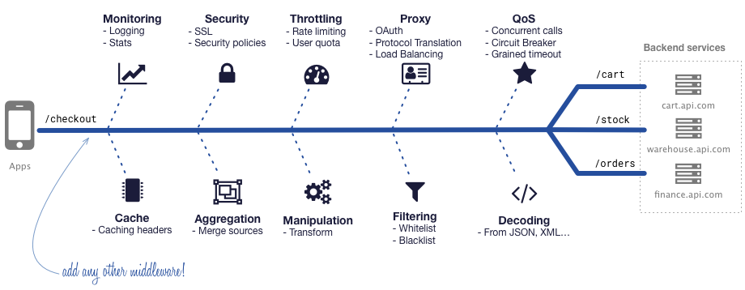

KrakenD 是用 Go 编写的开源高性能无状态、分布式、微服务 API 网关，其不仅可以轻松将客户端请求转发到后端服务，还具备强大的数据处理功能，支持转换、过滤、聚合和修剪来自后端服务甚至第三方服务的返回数据，从而消除处理多个 REST 服务的必要性，使客户端与微服务的实现细节隔离开来。这一切通过简单的配置即可实现，本文介绍 KrakendD 如何安装部署并快速投入应用。

KrakenD 概述
KrakenD 在具备超高性能的基础上还提供丰富的功能，简要梳理：
- API 数据聚合，将来自多个 API 的数据聚合到一起。
- API 数据过滤，仅公开真正需要的数据。
- 强大的配置模板，且支持多种配置格式，但建议使用 JSON 配置，可以实现更加灵活的网关配置。
- 无状态、无数据库，在 KrakenD 群集中，所有节点都是自治的，即使关闭了所有其他节点，其仍可继续运行。
- 支持在几乎所有环境中运行，无论是虚拟机或容器云环境。
- 支持插件扩展，您可以使用 Go 或 Lua 脚本扩展 KrakenD 功能和业务逻辑。
- 接口安全，支持速率限制、OAuth、SSL、XSS防护等多种安全策略，且均为开箱即用。
- 机器人探测器
更多功能特性请参考官网文档 krakenD
基于 Kubernetes 部署高可用 KrakenD 集群
KrakenD 是一个独立的二进制文件，可直接运行，不需要任何外部库工作。本节介绍在 Kubernetes 环境安装 KrakenD 的大致步骤。
配置文件
KrakenD 服务器启动和操作所需的所有配置都在配置文件中定义，可以通过可视化工具 KrakenDesigner 生成，可用的常用配置文件格式有 .json，.toml 和 .yaml。配置文件写好后，可以通过 krakend check 进行语法检查。
1、语法检查
|
|
2、配置文件结构
|
|
你可以在配置文件中放入很多选项，这里我们只关注文件结构。
version： KrakenD 文件格式，当前版本是 2。endpoints[]： 网关及其关联的后端服务定义。extra_config{}： 与中间件或插件相关的额外配置。例如，您可能要启用日志记录，这是 API 网关可选的非核心功能。
3、endpoints 结构
endpoints 是一个有所有可访问端点组成的数组，每个端点包含对外提供服务的端点 url 及与其相对应的后端服务列表。每个端点至少对应 1 个后端服务。
|
|
上述配置，声明端点 /v1/foo-bar 对应两个后端服务，当客户端请求 /v1/foo-bar 端点，网关将返回合并后的 /foo 和 /bar 服务的结果。
4、extra_config 结构
当注册组件后，将从 extra_config 获取相关配置。extra_config 可以出现在不同的层次，根级别的 extra_config 通常用于服务级别配置，将在全局范围内生效。另一方面，有的组件会在 endpoint 和 backend 内寻找 extra_config 配置，因为其功能仅特定于后端或端点行为。例如，您可能只想将速率限制设置为特定的端点或后端。
对于外部组件还需定义一个命名空间，用于组件检索配置。例如，gologging 中间件通过 github_com/devopsfaith/krakend-gologging 键读取配置信息。
|
|
使用组件仓库路径作为配置键是很好的时间，当 extra_config 位于根级别时，注意不要在键名称中包含 . 以避免解析器出现问题，注意上面配置示例中的 github_com。但当 extra_config 出现在 endpoint 或 backend 级别时，这些点可以正常使用。
下面示例定义了两个同时进行的速率限制策略：将端点限制为 5000 reqs/s，接着又配置其后端的 slow 服务，将其限制在 100 reqs/s 内。
|
|
5、多个配置文件
目前为止，上面示例中所有配置都在一个名为 krakend.json 的文件中， 对于生产环境数百个端点配置需求，KrakenD 通过 Flexible Configuration 组件允许我们将配置文件分割成不同的片段，以便于更加科学合理的组织接口配置。
启用 Flexible Configuration 后，KrakenD 假定您的配置文件是一个模板，需要在启动时进行编译。这样，您就有机会生成一个更复杂的配置文件，模板文件利用变量并从外部文件中获取内容。如果要启用 Flexible Configuration 则必须使用 .json 配置文件。
更多信息请参考 Flexible Configuration。
高可用集群
硬件随时可能发生故障，网关至关重要，通过运行该服务的计算机集群以确保高可用性。KrakenD 群集由同时运行并协同工作的多个 KrakenD 实例组成，以提供更高的可靠性，更高的吞吐量，可伸缩性和故障转移。
KrakenD 节点是无状态的，它们不将数据或应用程序状态存储到持久性存储中，而是，通过配置文件配置数据和应用程序状态。节点随时都可被杀掉和更换。
运行 KrakenD 集群是一个简单的过程，仅需要两个条件：
- 在网关前部署负载均衡器。
- 运行两个或多个 KrakenD 服务。
如果在 k8s 中，使用普通的 service 关联多个 pod 即可。
最佳实践
设置 KrakenD 集群是一个简单的过程，但是这里有一些建议供生产环境参考。
- 在负载均衡和 KrakenD API 网关之间启用 HTTP2，以获得最佳性能。
- 在负载均衡中添加 SSL 证书，并在负载均衡和 KrakenD 之间使用内部证书。
- 启用指标和日志记录，确保您对正在发生的事情具有可见性。至少启用一个 WARNING 级别的日志记录。
- 配置有意义的命名信息。
- 启动命令将输出重定向到/dev/null。